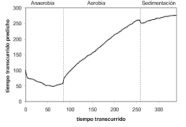
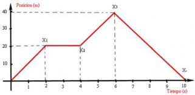
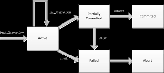

¿Qué son las transacciones?
Una transacción es un acuerdo comercial que se lleva a cabo entre dos partes, económicamente hablando es un convenio de compra y venta. también implica un intercambio de bienes y servicios a cambio del pago de una cantidad monetaria, denominada precio.
TIPOS DE TRANSACCIONES
-
.jpeg)
TRANSACCIONES GENERADORAS DE GASTOS
El gráfico Velocidad global de transacción muestra el tiempo promedio transcurrido para todas las transacciones durante un intervalo de muestreo específico. El tiempo transcurrido es el tiempo real transcurrido dentro del contenedor de transacciones. Si tiene cargas por etapas en la planificación, este gráfico también delinea las etapas con marcadores de rango de tiempo, de distintos colores, en la parte superior.
-
TRANSACCIONES GENERADORAS DE INGRESOS
toda transacción que genera ingreso para una empresa se origina en la venta de los bienes y servicios que ofrece al mercado. Los ingresos forman los activos de una empresa, puesto que aumentan o incrementan su capital financiero. puede aumentar sus ingresos y correlativamente sus activos cuando realiza un corte de cabello, cuando hace un manicure, un peinado, entre muchos de los servicios que vende en el mercado.
PRUEBAS DE EJECUCION DE TRANSACCIONES
PRUEBA 1: PAGINA GLOBAL
Acceder a la capa de almacenamiento de datos. Lo ideal es que el modelo sea independiente del sistema de almacenamiento. Define las reglas de negocio (la funcionalidad del sistema). Un ejemplo de regla puede ser: "Si la mercancía pedida no está en el almacén, consultar el tiempo de entrega estándar del proveedor". Lleva un registro de las vistas y controladores del sistema. Si estamos ante un modelo activo, notificará a las vistas los cambios que en los datos pueda producir un agente externo (por ejemplo, un fichero por lotes que actualiza los datos, un temporizador que desencadena una inserción, etc.).
PRUEBA 2: TIEMPO TRANSCURRIDO FRENTE A TIEMPO

El gráfico Tiempo transcurrido frente a tiempo muestra la respuesta promedio de cada transacción durante un intervalo de muestreo especificado. Cada transacción se representa mediante una línea independiente. Si tiene cargas por etapas en la planificación, este gráfico también delinea las etapas con marcadores de rango de tiempo, de distintos colores, en la parte superior.
PRUEBA 3: TIEMPO DE NETO DE EXTREMO A EXTREMO FRENTE A TIEMPO

El tiempo neto de extremo a extremo de una transacción es el tiempo medido de las interacciones con el servidor y un cliente como, por ejemplo, un navegador o un dispositivo. Generalmente, no incluye tiempos de reflexión ni el tiempo de proceso del entorno de trabajo.
PRUEBA 4: TIEMPO DE SERVIDOR NETO FRENTE A TIEMPO
El tiempo de servidor neto para una transacción es un tiempo medido de interacciones con el servidor. Generalmente, no incluye tiempos de reflexión ni el tiempo de proceso del producto. El cálculo de interacción del servidor es específico del protocolo. Por ejemplo, en el protocolo HTTP, el tiempo de servidor neto es exactamente la suma de todos los tiempos de respuesta por página. El tiempo transcurrido (tiempo que usuario percibiría) incluye el tiempo de reflexión así como otros tiempos de procesos del producto. Para una prueba de interfaz de usuario web, el tiempo de servidor neto incluye la suma del tiempo transcurrido en el servidor y en la red.
PRUEBA 5: SEPARADOR RENDIMIENTO DE TRANSACCIONES
Estos gráficos de líneas proporcionan una visión general de la frecuencia de transacción y del número de usuarios añadidos a la carga, ambos a través del curso de una ejecución. El gráfico Velocidad coincidencias transacciones muestra las velocidades globales para el inicio y la finalización de transacciones durante un intervalo de muestreo especificado. Si tiene cargas por etapas en la planificación, este gráfico también delinea las etapas con marcadores de rango de tiempo, de distintos colores, en la parte superior. La tabla de resumen que se encuentra bajo el gráfico muestra la frecuencia de transacción por segundo y el número de transacciones que se han completado en toda la ejecución. El gráfico Carga de usuarios muestra el número de usuarios activos y el número de usuarios que han completado las pruebas durante el curso de la ejecución. La tabla de resumen bajo el gráfico muestra el número de usuarios activos, el número de usuarios que han completado las pruebas y el total de usuarios para el último intervalo de muestreo.
PRUEBA 6: ESTADO DE LA TRANSACCION

El separador Estado de la transacción muestra si la transacción tiene el estado correcto o incorrecto. Al definir condiciones de error de una transacción, puede establecer si el comportamiento de los errores afecta al estado de la ejecución. Si se cumple alguna condición en una transacción, la transacción se marcará como incorrecta. Sólo se muestra la barra del gráfico si no hay ningún error.